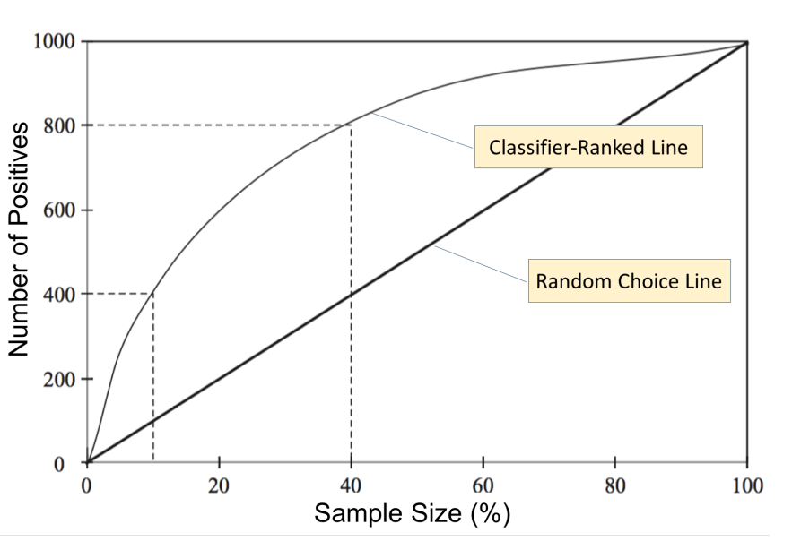
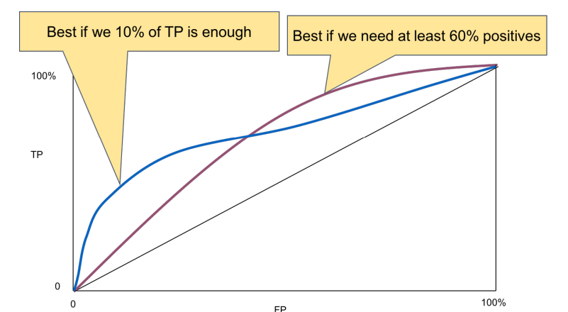

Transform a probabilistic classifier into a crisp classifier
There are two methods to transform a probabilistic classifier into a crisp one depending on the kind of classifier:
- binary : set a threshold for the positive class
- multicast: return the class with maximum probability
Lift chart
Consider the dataset with N positive and apply the probabilistic classification, sort the classified elements in decreasing probability of positive class, plot a chart with a line representing the positives obtained with a random choice of sample test data and a curve with the number of positive taken by a fraction of the test data with decreasing probability. The largest the area between the two lines, the better the classifier 
Roc Curve
Find a threshold that maximize the trade-off between hit rate and false alarm due to noisy data.
We assume to be able to represent the two label (p, n) with a Gaussian curve each. With a low level of noise the two curves are well separated but, with a lot of noise, the curves may overlap a lot. Moving the threshold will increase the true positive and the false positive (in one direction) or the opposite in the opposite direction.
Converter pseudocode
def RocDrawer():
elements = elements.sort_with_decreasing_probability()
trashold = elements[0]
true_positive = TruePositivetWithTrashold(trashold)
true_negative = FalsePositivetWithTrashold(trashold)
drawPoint(true_positive, true_negative)
while(len(elements) > 0):
trashold = elements.pop()
true_positive = TruePositivetWithTrashold(trashold)
true_negative = FalsePositivetWithTrashold(trashold)
drawPoint(true_positive, true_negative)
Then, from the Roc curve, mixed with the lift chart we can choose the threshold depending on our needs 